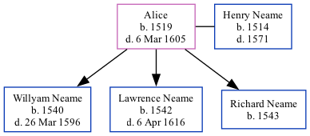

Alice, the 12 times great-grandmother of Nigel Horne, was born in Woodnesborough, Kent, England in 15191 and married Henry Neame (with whom she had 3 children: Willyam, Lawrence and Richard) in Woodnesborough in 15391.
She died on Mar 6, 1605 in Woodnesborough1,2 and was buried there on Mar 21, 1605 (According to Tyler).
OneWorldTree Online publication - Provo, UT, USA: The Generations Network, Inc.
Kent, England, Tyler Index to Parish Registers, 1538-1874 Online publication - Provo, UT, USA: Ancestry.com Operations, Inc., 2010. This collection was indexed by Ancestry World Archives Project contributors.Original data - Frank Watt Tyler. The Tyler Collection. Canterbury, Kent, England: The Institute of Herald
Family Tree

Map
Generated by ged2site. Last updated on Feb 28, 2025